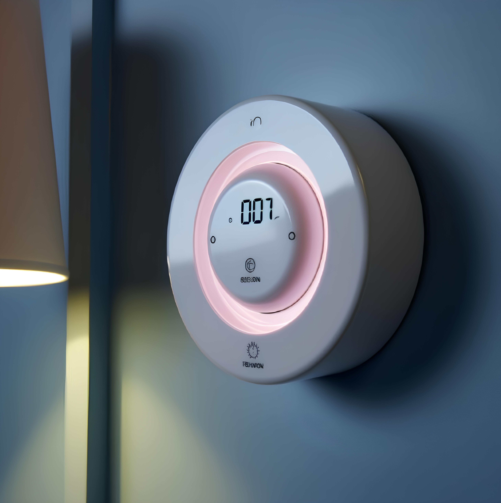

Что же представляет собой наш продукт?
- Инфракрасный (ИК) датчик движения: Этот датчик использует инфракрасные лучи для обнаружения теплового излучения от объектов, таких как человек.
- Осветительные и звуковые системы: Датчик может включать в себя светодиоды или другие источники света, которые активируются при обнаружении движения.
Звуковые системы могут воспроизводить аудиоэффекты или записанные сообщения для привлечения внимания. - Таймеры и часы реального времени: Для управления временными параметрами, такими как длительность работы света или активация рекламы в определенные часы, могут использоваться таймеры или часы реального времени.
- Датчик освещенности: Датчик освещенности может определять текущий уровень освещения вокруг, что позволяет датчику реагировать на окружающие условия.
- Модуль беспроводной связи: Датчик может быть оборудован модулем беспроводной связи для удаленного управления и мониторинга.
- Блок питания:Источник питания, такой как батареи или подключение к электросети, обеспечивает энергию для работы датчика.
- Управления освещением: При обнаружении движения, датчик может автоматически включить свет в комнате. После истечения времени без движения, свет может автоматически выключиться для экономии энергии.
- Включение ночного режима: В ночное время датчик может переключиться в ночной режим, при котором яркость экрана уменьшается во имя защиты глаз
- Запись статистики:Датчик может вести запись времени и частоты обнаружения движения. Собранная статистика может быть использована для анализа эффективности сна и времени пробуждения
- Поддержка удаленного управления:Датчик может быть интегрирован в систему удаленного управления, что позволяет изменять настройки с помощью приложения на телефоне
- Будильник: Датчик запоминает время выставленное пользователем и включает в это время будильник
| Параметр | Описание |
|---|---|
| Инфракрасный (ИК) датчик движения | Диапазон обнаружения: до 5 метров. Угол обзора: 120 градусов. Чувствительность: регулируемая для адаптации к разным условиям освещения. |
| Осветительные системы | Датчик может включать в себя светодиоды или другие источники света, которые активируются при обнаружении движения. Тип светодиодов: энергоэффективные светодиоды высокой яркости. |
| Таймеры и часы реального времени | Встроенные часы реального времени для точного времени и управления событиями. Настройка времени работы для каждой функции. |
| Датчик освещенности | Диапазон измерения освещенности: от 0 до 1000 люкс. Автоматическое регулирование освещенности в зависимости от окружающих условий. |
| Модуль беспроводной связи | Стандарты связи: Wi-Fi, Bluetooth. Возможность удаленного управления через мобильное приложение. |
| Блок питания | Тип питания: сетевой/батарейный. Емкость аккумулятора (если применимо): например, 5000 мАч. |
| Энергопотребление: | Энергопотребление в режиме ожидания: менее 1 Вт. Энергопотребление в активном режиме: в зависимости от включенных функций. |
| Габариты и вес: | Габариты устройства: например, 150 x 100 x 50 мм. Вес: 300 г. |
| Совместимость: | Совместимость с операционными системами: iOS, Android. Возможность интеграции с умными домашними системами. |